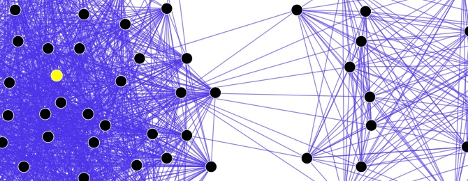

Licenca
To delo je na voljo pod pogoji slovenske licence Creative Commons 2.5:
priznanje avtorstva - nekomercialno - deljenje pod enakimi pogoji.
Celotna licenca je na voljo na spletu na naslovu http://creativecommons.org/licenses/by-nc-sa/2.5/si/. V skladu s to licenco je dovoljeno vsakemu uporabniku delo razmnoževati, distribuirati, javno priobčevati, dajati v najem in tudi predelovati, vendar samo v nekomercialne namene in ob pogoju, da navede avtorja oziroma avtorje in izdajatelja tega dela. Če uporabnik delo predela, kar pomeni, da ga spremeni, preoblikuje, prevede ali uporabi to delo v svojem delu, lahko predelavo dela ponudi na voljo le pod pogoji, ki so enaki pogojem iz te licence oziroma pod enako licenco.

Družabna omrežja
Twitter je družabno omrežje, ki omogoča tako imenovano mikro bloganje. »Navadno« bloganje je objavljanje svojih razmišljanj v obliki, ki spominja na dnevnik. Mikro bloganje ni dosti drugačno, le da je dolžina zapisov močno omejena (spominja na dolžino sporočila SMS) – v primeru Twitterja je to 140 znakov. Twitter ima kar 500 milijonov uporabnikov po vsem svetu, privzeto pa so vsa sporočila – tako imenovani tviti javni in dostopni prav vsakomur. Če uporabnik zaščiti svoje tvite (to lahko stori v nastavitvh svojega profila), so dostopni le še njegovim sledilcem, ki pa jih še vseeno lahko širijo naprej. Tweeter ob vsakem tvitu objavi tudi lokacijo uporabnika, omogoča pa tudi iskanje uporabnikov po njihovem elektronskem naslovu. Tudi ti dve možnosti lahko uporabniki izklopijo.
 Slika Twitterjeve časovnice, ki jo lahko vgradimo v druge spletne strani.
Slika Twitterjeve časovnice, ki jo lahko vgradimo v druge spletne strani.
Facebook je družabno omrežje, kjer si uporabnik ustvari svoj profil in na njem deli svoje slike, kratke zapise (status), video posnetke, se pogovarja z znanci (ali neznanci), igra igre in podobno. Z drugimi uporabniki se poveže tako, da jih doda med »prijatelje«. Izraz »prijatelji« je namenoma v navednicah, saj prijatelj s Facebooka ni vedno tudi prijatelj, celo niti znanec v resničnem življenju. Bolj primeren izraz bi bil kontakt. Za objavljene podatke lahko določa, kdo jih vidi: vsi, samo prijatelji, ali pa nihče razen uporabnika. Nove znance in stare prijatelje lahko poišče s pomočjo iskalnika. Skoraj bi lahko rekli, da je Facebook internet znotraj interneta. Z dobrimi in slabimi stranmi vred. Tako se tudi znotraj Facebooka lahko dogajajo različne zlorabe ali napadi, na primer neželena pošta, nadlegovanje uporabnikov na klepetu ali smetenje po njihovih časovnicah, neresnično ali moteče označevanje na fotografijah in podobno. Za večino od takih zlorab Facebook omogoča, da bodisi blokiramo naš odnos z osebo, ki to izvaja, ali pa prijavimo taka dejanja Facebooku.
Spodnja slika prikazuje le del socialnega omrežja (pike predstavljajo osebe, črte pa povezave/odnose med osebami). Celotno omrežje si lahko ogledaš tukaj. Socialna ali družabna omrežja obstajajo tako v virtualnem kot v resničnem življenju, vsa takšna omrežja pa temeljijo na dejstvu, da smo ljudje družabna bitja. Socialna omrežja oziroma socialne odnose med posameznikom in drugimi ljudmi preučuje sociologija.
